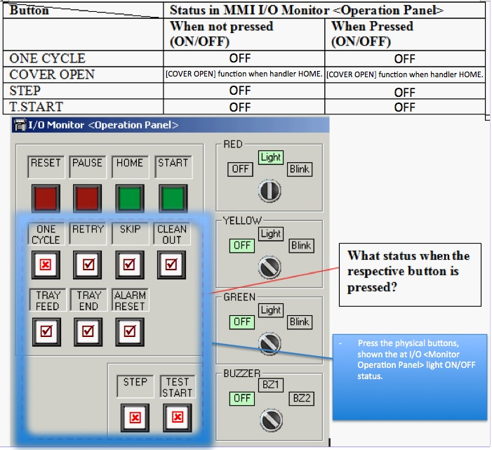
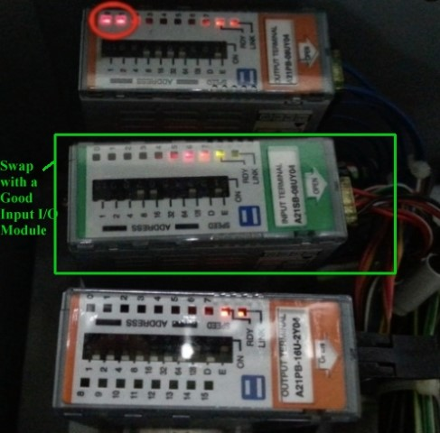

Service History
Subject: NS-7000 Rear Operation Panel [STEP] button cannot get input
Handler Model:
Controller:
Date:
Symptom
Marvell NS-7000 having abnormal issue, select "Auto-contact Height Calibration" or "Contact Test (Height Adjustment)" mode, rear side control box panel "STEP Button" will light ON, but not functioning.
Unable to perform "Auto-contact Height Calibration" and "Contact Test (Height Adjustment)" mode. Below is the troubleshooting taken.
- Swap the rear side "Control Box Panel", problem still occur.
- Check the wire condition and connection "XC3C" to "XC3".
- Swap the "SKP350-3 Board", problem still occur.
- Swap the whole "Control Unit", "Remote I/O Card" and "I/O Card", the problem still occur.
Action
Have you tried to:
1) check the SPEL Input I/O Bit status when the [STEP] button is Pressed or Release?
2)check the cable (connecting to the Rear operation panel; Operation Box) for any small wire that is broken?
Something when customer close the Rear Door, the cable is being clamped on and after prolong clamping, wire will break.
3)Swap the Rear Operation Panel (Operation Box) with cable from another handler?
4) Check 8CH Input IO Module “Opunt” (Wiring manual rev.4 page 19). Check the address and signal #202 light on the module when you press the STEP button.
Swap with 8CH Input IO Module to confirm module is ok.
19 Feb 2012
Customer informed that One cycle, step & T.start no light up when when press on the button.
[ONE CYCLE] button for Front & Real Operation Panel not functioning
Retry, tray feed, skip, tray end, clean out and arlam reset have light up.
Cover open have function also when press home function.

Customer replaced 8CH Input IO Module “Opunt” in PSUNT, problem solved.

Cause
Faulty 8CH Input IO Module “Opunt” in PSUNT.
[STEP], [ONE CYCLE], [T.START] are not working and linked to this same Input IO Module.